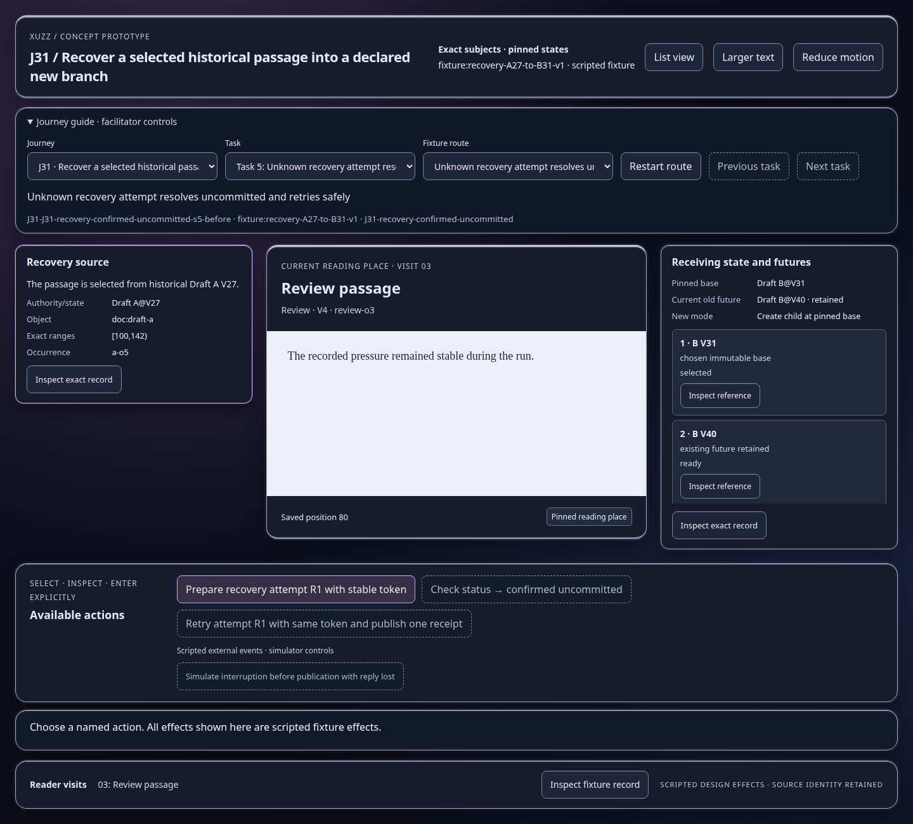
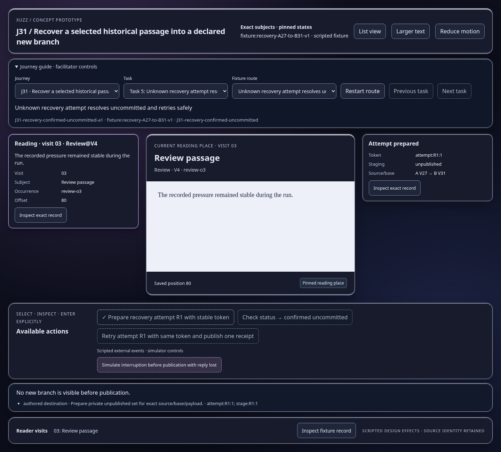
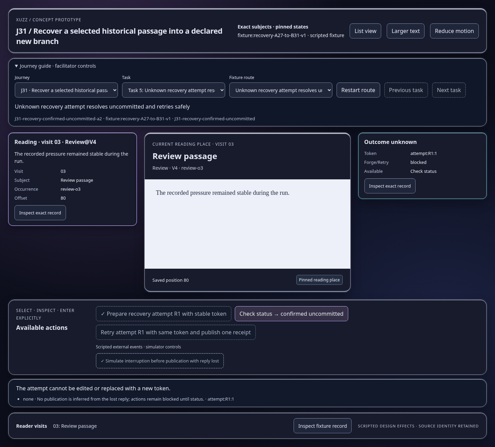
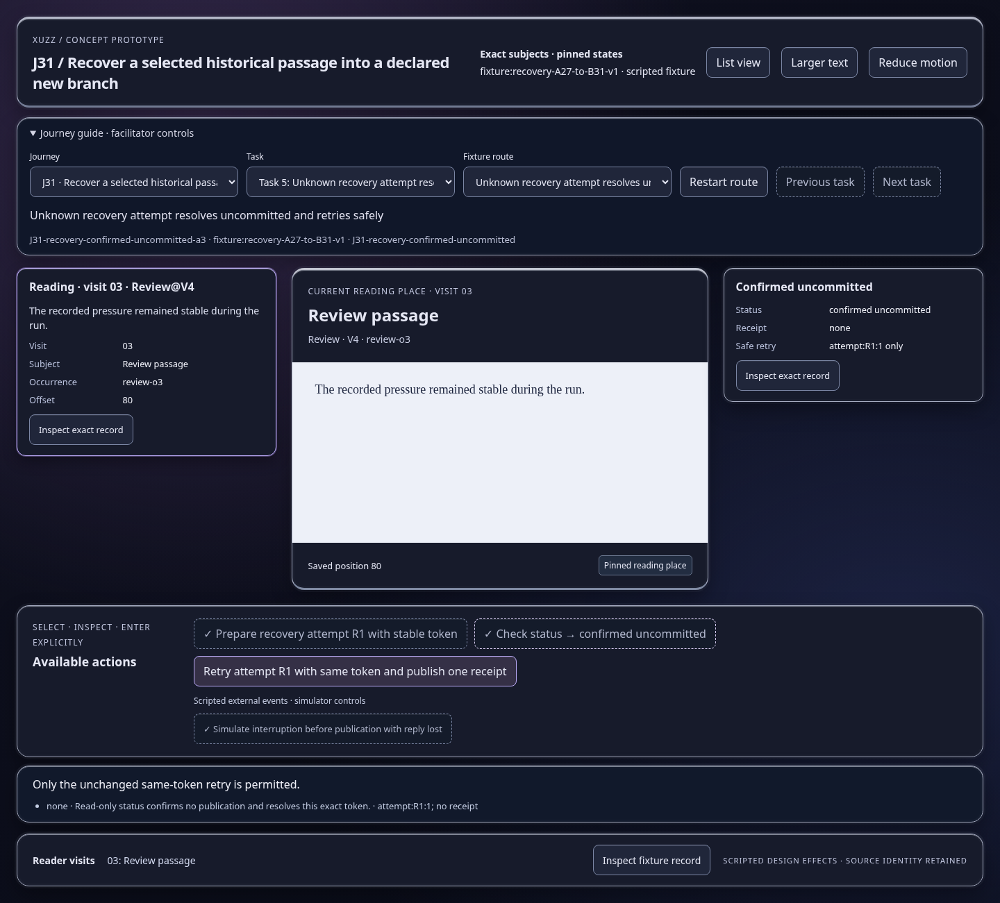
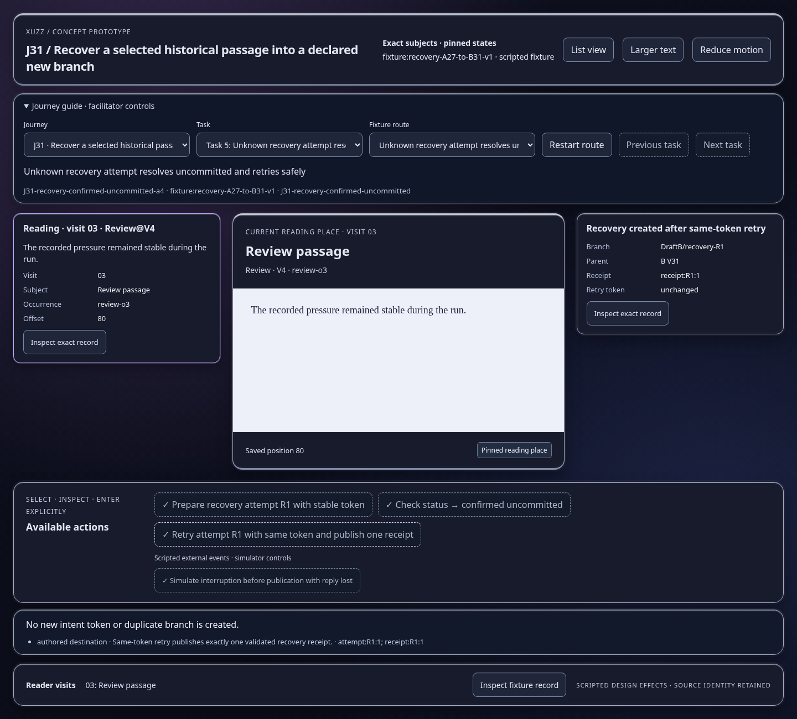

Scripted concept states; inspect the effect and identity trace. Images show actual prototype rendering.

No new branch is visible before publication.
Open this represented state
The attempt cannot be edited or replaced with a new token.
Open this represented state
Only the unchanged same-token retry is permitted.
Open this represented state
No new intent token or duplicate branch is created.
Open this represented state